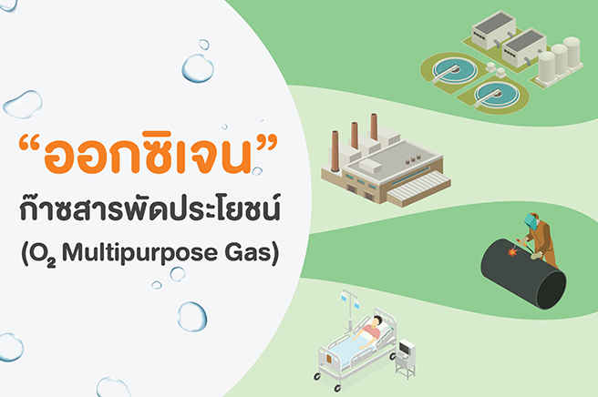
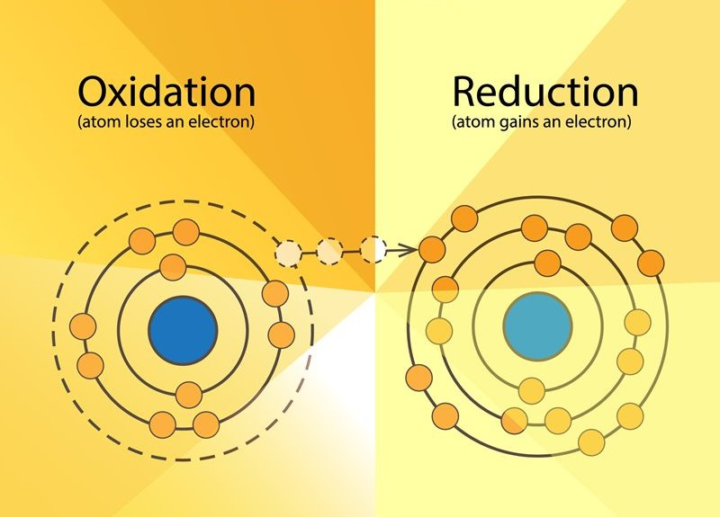

ปฏิกิริยาของธาตุและออกซิเจน
ก๊าซออกซิเจนเป็นส่วนประกอบของอากาศทั่วไป แต่เราสามารถเตรียมก๊าซนี้ได้ในห้องปฏิบัติการโดยการเผา ด่างทับทิม แล้วเก็บก๊าซ ใต้น้ำ นำก๊าซที่ได้ไปทดสอบ พบว่าก๊าซที่เตรียมได้ช่วยให้ไฟติด แสดงว่าเป็น "ก๊าซออกซิเจน" เมื่อเผากำมะถัน ได้สารใหม่เกิดขึ้นคือ ซัลฟอร์ไดออดไซด์ เมื่ออทดสอบมีสมบัติผิดจากสารเริ่มตัน แสดงว่ามีสารใหม่เกิดขึ้นจัดเป็นการเกิดปฏิกิริยา ปฏิกิริยาบางชนิดมองไม่เห็นการเปลี่ยนแปลง แต่ถ้าทิ้งไวันานๆสารเริ่มต้นจะปลี่ยนสภาพไป เช่น ปฏิกิริยาคมีที่เกิดขึ้นกับภาชนะโลหะ เมื่อใช้ภาชนะโลหะบางชนิดไปนานๆจะกลายเป็นสีเทาดำหรือเกิดสนิมของเหล็ก ปฏิกิริยาเคมีเกิดขึ้นเมื่อมีการเผาไหม้ หรือปฏิกิริยาเคมีระหว่างกรด-เบส ปฏิกิริยาเหล่านี้เกิดขึ้นเป็นประจำในชีวิตประจำวันของคนเราการเผาไหม้ต่างๆในชีวิตประจำวัน เช่น การเผาไหม้ของถ่าน เป็นการเผาไหม้ของธาตุกับออกซิเจนในอากาศ ซึ่งในอากาศนั้นก็จะมีก๊าชคาร์บอนไดออกไซด์ ซัลเฟอร์ไดออกไซด์ ไอน้ำ และฝุ่นละอองอื่นๆปะปนอยู่ ออกไซด์ของคาร์บอนและออกไซด์ของกำมะถันเมื่อละลายน้ำแล้วมีสมบัติเป็นกรด
2 ปฏิกิริยาระหว่างกรดกับเบส สามารถแบ่งได้ดังนี้
1. ปฏิกิริยาระหว่างกรดแก่กับเบสแก่
เช่น ปฏิกิริยาระหว่างกรดแก่ HCl กับเบสแก่ KOH ได้เกลือ KCl และน้ำ ดังนี้ HCl (aq) + KOH (aq) KCl (aq) + H2O (l)
2. ปฏิกิริยาระหว่างกรดแก่กับเบสอ่อน เช่น ปฏิกิริยาระหว่างกรดแก่ HCl กับเบสอ่อน NH4OH ได้เกลือ NH4Cl และน้ำ HCl (aq) + NH4OH (aq) NH4Cl (aq) + H2O (l)
3. ปฏิกิริยาระหว่างกรดอ่อนกับเบสแก่ เช่น ปฏิกิริยาระหว่างกรด CH3COOH และเบส NaOH ได้เกลือโซเดียมแอซิเตต (CH3COONa) และน้ำ CH3COOH (aq) + NaOH (aq) CH3COONa (aq) + H2O (l)
4. ปฏิกิริยาระหว่างกรดอ่อนกับเบสอ่อน เช่น ปฏิกิริยาระหว่างกรด HCN กับเบส NH4OH ได้เกลือ NH4CN และน้ำ HCN (aq) + NH4OH (aq) NH4CN (aq) + H2O (l)
ปฏิกิริยาระหว่างกรดและเบสในน้ำนี้จะทำให้สารละลายที่ได้แสดงสมบัติเป็นกรด เบส หรือกลางได้ ซึ่งพิจารณาได้เป็น 2 กรณี
1. ในกรณีกรดและเบสทำปฏิกิริยากันแล้วมีกรดหรือเบสเหลืออยู่ ถ้ามีกรดเหลืออยู่สารละลายแสดงสมบัติเป็นกรด ถ้ามีเบสเหลืออยู่สารละลายก็จะแสดงสมบัติเป็นเบส
2. ถ้ากรดกับเบสทำปฏิกิริยากันหมดพอดี ได้เกลือกับน้ำ สารละลายของเกลือที่ได้จากปฏิกิริยา จะแสดงสมบัติเป็นกรด เบส หรือกลาง ขึ้นอยู่กับชนิดของเกลือนั้นว่ามาจากกรดและเบสประเภทใด ทั้งนี้เพราะเกลือแต่ละชนิดจะเกิดการแตกตัวและทำปฏิกิริยากับน้ำ เรียกว่า ไฮโดรลิซิส ซึ่งจะทำให้สารละลายแสดงสมบัติกรด-เบสต่างกัน รายละเอียดอยู่ในหัวข้อต่อไป
ปฏิกิริยาออกซิเดชัน-รีดักชัน
(oxidation)
ปฏิกิริยาออกซิเดชัน หมายถึงปฏิกิริยาที่โมเลกุลหรืออะตอมมีการสูญเสียอิเล็กตรอนจากวงโคจรให้กับโมเลกุล ที่ทำหน้าที่เป็นตัวรับอิเล็กตรอน ปฏิกิริยาออกซิเดชันและรีดักชัน (reduction) จะเกิดคู่กัน สารที่ทำหน้าที่เป็นตัวให้อิเล็กตรอน เรียกว่า ตัวรีดิวซ์ (reducing agent) และเรียกสารที่ทำหน้าที่รับอิเล็กตรอนนี้ว่า ตัวออกซิไดส์ (oxidizing agent) โดยปฏิกิริยา ออกซิเดชัน มักจะเกี่ยวข้องกับออกซิเจน
นอกจากนี้ออกซิเดชันยังหมายถึงการเสียไฮโดรเจนอะตอมออกจากโมเลกุลอีกด้วย ปฏิกิริยาออกซิเดชันและอนุมูลอิสระนั้นมี ความเกี่ยวข้องกัน เนื่องจากปฏิกิริยานี้ทำให้เกิดอนุมูลอิสระของสารต่างๆ ได้มากมายหลายชนิด และอนุมูลอิสระที่เกิดขึ้น จะทำให้เกิดปฏิกิริยาออกซิเดชันกับสารอื่นๆ เป็นปฏิกิริยาลูกโซ่ต่อไป อะตอมที่ทำหน้าที่เป็น reducing agent ได้ดี เป็นอะตอมที่มีขนาดใหญ่ จึงมีระยะห่างระหว่าง นิวเคลียส กับอิเล็กตรอนวงนอกสุดมาก จึงมีแรงดึงดูดอิเล็กตรอน (electronegativity) ต่ำ ทำให้สูญเสียอิเล็กตรอนง่าย
อัตราการเกิดปฏิกิริยาเคมี หมายถึง ความเร็วที่ตัวทำปฏิกิริยาเปลี่ยนไปเป็นสารผลิตภัณฑ์ต่อหน่วยเวลาโดยที่หน่วยความเข้มข้นของสารเป็น mol/dm3 ดังนั้นอัตราการเกิดปฏิกิริยาเคมีจึงมีการเปลี่ยนแปลงความเข้มข้นของสารต่อวินาทีชั่วโมง หรือวัน ทั้งนี้ขึ้นอยู่กับปฏิกิริยาเกิดเร็วหรือช้าเพียงใด ให้เราพิจารณาจากปฏิกิริยาต่อไปนี้ เมื่อเวลาผ่านไปจากเวลา t1 ไปเป็น t2 ความเข้มข้นของสาร AB ที่ t1 เป็น [AB]t1และความเข้มข้นของสาร AB ที่ t2 เป็น [AB]t2 ระยะเวลาความเข้มข้นของสารABเปลี่ยนไป ดังนั้นอัตราการเกิดปฏิกิริยาเคมี หน่วยของอัตราการเกิดปฏิกิริยาเคมีเป็นเมื่อ s เป็นวินาที นอกจากพิจารณาความเข้มข้นของสารABเปลี่ยนไปต่อหน่วยเวลาแล้วเราสามารถพิจารณาความเข้มข้นของสารCที่เปลี่ยนไปหรือพิจารณาจากสารผลิตภัณฑ์ACหรือBที่เกิดขึ้นต่อหน่วยเวลาได้เช่นเดียวกัน ดังนั้น * อัตราการเกิดปฏิกิริยาเคมีหมายถึง อัตราการเกิดที่ความเข้มข้นของตัวทำปฏิกิริยาลดลงหรือ สารผลิตภัณฑ์ใดผลิตภัณฑ์หนึ่งเพิ่มข้นกับเวลาท่าผ่านไป
ในการศึกษาอัตราการเกิดปฏิกิริยาเคมีจะต้องรู้ถึงชนิดของปฏิกิริยาในที่นี้จะจำแนกชนิดของปฏิกิริยาออกเป็น 2 ประเภท ดังนี้
1. ปฏิกิริยาเนื้อเดียว (homogeneous reaction) จัดเป็นปฏิกิริยาที่สารตั้งต้นทั้งหมดอยู่ในสถานะเดียวกัน CH4(g)+ 2O2(g)---->CO2(g) + 2H2O(g)
2. ปฏิกิริยาเนื้อผสม (heterogeneous reaction) จัดเป็นปฏิกิริยาที่สารต่าง ๆ ไม่ได้อยู่ในสถานะเดียวกัน 3HCl(aq) + HNO3(aq)--->Cl2(g) + NOCl(g) + 2H2O(l) การทราบชนิดของปฏิกิริยาจะทำให้ศึกษาปัจจัยที่มีผลต่ออัตราการเกิดปฏิกิริยานั้นได้ง่ายขึ้น
2.1 ชนิดของอัตราการเกิดปฏิกิริยาเคมี อัตราการเกิดปฏิกิริยาเคมีหรืออาจจะเรียกย่อๆ ว่า อัตราการเกิดปฏิกิริยา ซึ่งแบ่งออกเป็น 3 ประเภท คือ
2.1.1. อัตราการเกิดปฏิกิริยาเฉลี่ย (Average rate)หมายถึง อัตราการเกิดปฏิกิริยาที่คิดจากการเปลี่ยนแปลงปริมาณสารตั้งต้นที่ลดลง หรือการเปลี่ยนแปลงปริมาณสารผลิตภัณฑ์ที่เพิ่มขึ้นตั้งแต่เริ่มต้นปฏิกิริยาจนสิ้นสุดการเกิดปฏิกิริยาหรือสิ้นสุดการทดลองในหนึ่งหน่วยเวลา มีได้ค่าเดียว